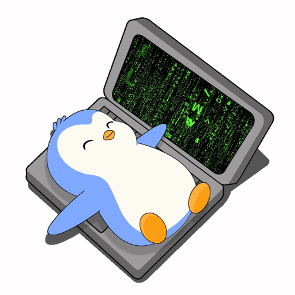
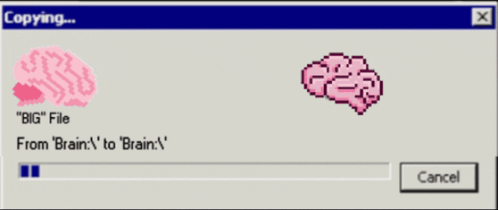
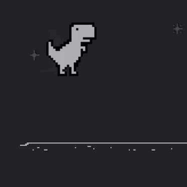
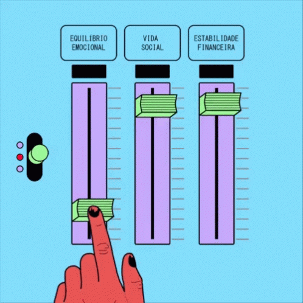
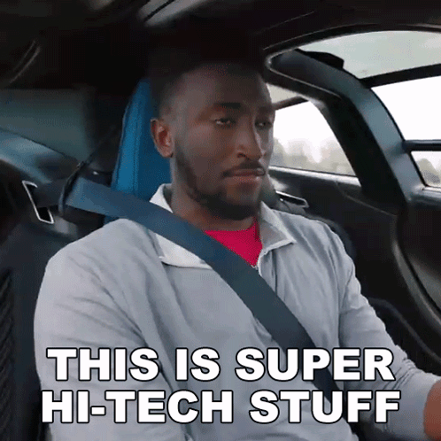

Week 1 of 2 · Fundamentals
AI,
How it actually works, in plain English.
💃
Week 1 of 2 · Fundamentals
AI,
from zero.
How it actually works, in plain English.
Welcome. No prerequisites. By the end of today nobody should feel like AI is magic. It's a machine with a few very specific habits, and once you know them you'll use it far better than most people.
Prerequisites
None.
Optional: be ready to spend ~$20 on one AI subscription.
Everything today also works on free tiers.
Free works
Prerequisites
None.
Optional: be ready to spend ~$20 on one AI subscription.
Everything today also works on free tiers.
Free works
$20 unlocks more
You don't need to code or know any math. Free tiers cover everything today. A single $20 plan gets you the bigger models and higher limits, and next week that makes a real difference.
The journey
Four building blocks.
Module 1 Week 1
Fundamentals
Module 2 Week 2
Use AI better
Module 3 Week 3
Build with AI
Module 4 Week 4
Think in the age of AI
The journey
Four building blocks.
Module 1Week 1
Fundamentals
Module 2Week 2
Use AI better
Module 3Week 3
Build with AI
Module 4Week 4
Think in the age of AI
Four building blocks, each one stacks on the last. Week 1: understand the fundamentals. Week 2: use AI better. Week 3: build with AI. Week 4: how to think in the age of AI. [Click] Honestly, we don't know how long each one will take, so let's call them modules instead of weeks.
Today · 2 hours
The map
01 How a model works 20m
06 Model vs app vs agent harness 15m
02 Proprietary vs open weights 10m
07 Specialized vs general tools 10m
03 Tokens & the context window 15m
08 Skills & MCP 10m
04 How do I get access? 10m
09 AI slop: what makes you different 10m
05 Which model, when? 10m
10 Context engineering 10m
Today · 2 hours
The map
01How a model works20m
06Model vs app vs agent harness15m
02Proprietary vs open weights10m
07Specialized vs general tools10m
03Tokens & the context window15m
08Skills & MCP10m
04How do I get access?10m
09AI slop: what makes you different10m
05Which model, when?10m
10Context engineering10m
Each hard idea gets followed by a short live demo.
Ten stops. The three in green are the foundations, and everything after builds on them. Rule for today: every hard concept gets a short demo right after it, so you see it happen instead of just hearing about it.
Watch for these
Your stickers for the next two weeks
💃 ModelThe raw brain. Text in, text out.
The body around the brain: apps, tools, memory.
Laptops out. We try it right now.
A fact worth repeating at dinner.
Don't memorize it. Ask the AI to explain it back.
What it costs to try this yourself.
A question first. Shout an answer, then we reveal it.
Watch for these
Your stickers for the next two weeks
💃Model
The raw brain. Text in, text out.
Agent harness
The body around the brain: apps, tools, memory.
Live demo
Laptops out. We try it right now.
Did you know?
A fact worth repeating at dinner.
Ask AI
Don't memorize it. Ask the AI to explain it back.
Free
Paid
What it costs to try this yourself.
Your guess?
A question first. Shout an answer, then we reveal it.
Green circle with the dancer 💃 means a model, the brain. Blue hexagon means a harness, the app or agent wrapped around the brain. That split matters a lot in part 6. Red means a demo is coming. Purple means I'm going to ask you first: take a guess before I reveal the answer. Wrong guesses are the point; they make the answer stick.
01
How a model works
Two words: training and inference.
01
How a model works
Two words: training and inference.
When people say "the model", they mean one specific thing. Let's pin down what it is.
Finish this sentence
What word comes next?
That's the whole trick: guess the next word.
Illustrative numbers. It's your phone's autocomplete, trained on a big chunk of the internet.
Finish this sentence
What word comes next?
The cat sat on the mat
mat
62%
floor
14%
sofa
9%
roof
4%
Your guess?
That's the whole trick: guess the next word.
Illustrative numbers. It's your phone's autocomplete, trained on a big chunk of the internet.
Ask the room first and let them shout. Everyone says "mat". Press → to reveal the odds: you just did what the model does. Press → again for the punchline. That's all it does. Given some text, it scores every possible next word and picks one. Then it does it again, and again. Essays, code and poems are all this one step repeated thousands of times. Keep the bar chart in mind; we'll come back to it in the demo.
Two phases
Training builds the model. Inference uses it.
💃 TRAINING
? ?
💃
INFERENCE
Learning. Months , many millions of dollars, done once .
Using. Seconds , fractions of a cent, every time you hit enter .
Two phases
Training builds the model. Inference uses it.
TRAINING
INFERENCE
Learning. Months, many millions of dollars, done once.
Like going to school.
Using. Seconds, fractions of a cent, every time you hit enter.
Like sitting the exam.
Left side: books, articles and web pages pour in, and out comes the model. That's training. It happens once, in a data center, and costs a fortune. [Click] Right side: a question goes into the finished model, and an answer comes out. That's inference. Everything you do in ChatGPT or Claude is inference. You never train the model when you chat with it.
Training, up close
Read the library. Then do the job training.
👧
💃
Pre-training Read a huge slice of the internet, books and code. Learn to predict the next word.
Base model Knows a lot. Brilliant autocomplete. No manners, doesn't follow instructions.
Post-training Humans show and rate good answers. It learns to be helpful, honest and safe.
Assistant What you actually talk to: Claude, GPT, Gemini, Grok, DeepSeek…
Training, up close
Read the library. Then do the job training.
Pre-training
Read a huge slice of the internet, books and code. Learn to predict the next word.
Base model
Knows a lot. Brilliant autocomplete. No manners, doesn't follow instructions.
Post-training
Humans show and rate good answers. It learns to be helpful, honest and safe.
Assistant
What you actually talk to: Claude, GPT, Gemini, Grok, DeepSeek…
Pre-training is reading the entire library. The result is a base model: it knows a lot, but ask it a question and it might just carry on with more questions, because it's only autocompleting. Post-training is job training. People write example answers and rank responses, and the model learns to behave like an assistant. Much of what makes Claude feel different from GPT comes from this stage.
A giant file of numbers.
💃
❄️
❄️
🧊
What is a "model", physically?
A giant file of numbers.
Think billions of tiny dials. They're called weights or parameters.
Training = turning the dials until the guesses get good.
After training, the dials are frozen. Chatting with it doesn't change them.
Open models run from ~1 billion to ~1 trillion dials.
What is a model, physically? Strip away the hype and it's a file, a very large file of numbers. Each number is a dial, and they're called weights or parameters. Open models run from about 1 billion to about 1 trillion of them. Right now they're all moving: this is training. [Click] Text runs through the dials and out comes a guess. [Click] We compare that guess with the right answer and send the error backwards through every dial, nudging each one a tiny bit. That's called backpropagation, and it repeats billions of times until the guesses get good. [Click] Then training stops and the dials freeze. Key point: when you chat with it, it isn't learning from you. The dials don't move. Remember "weights"; it comes back in two slides.
Closed vs open.
💃





Here's our frozen model from the last slide. Training is done and the dials are locked. Now the company that made it has a choice: what do they do with this file? [Click] Some lock it up. The weights never leave their servers, and you rent access through their app or API. That's a closed, or proprietary, model. Others open the door and publish the file so anyone can download it. That's an open-weights model. [Click] Where it runs: closed models live inside big companies' data centers, and you visit them over the internet. [Click] Open models can run right here, on your own laptop, even with the Wi-Fi off. [Click] Your data: with a closed model, every file and question you send goes to their servers. With an open model running locally, it never leaves your machine. It even works with no internet at all. [Click] What you pay for: closed means a subscription or per-use API fees to cover their data centers. Open means your own hardware or a cloud you choose, and the model itself is free. [Click] Customizing: with open weights you have the file, so you can fine-tune it on your own data however you like. Closed models give you limited options, on their terms. [Click] Top capability: the closed models are usually the cutting edge. Open models are close behind, often by a few months. So the trade-off is privacy and control versus convenience and peak capability.
Closed or open?
OpenAI GPT-5.6
DeepSeek
All Anthropic models
Gemini
Gemma
Llama
Qwen
Mistral
Closed or open?
OpenAI GPT-5.6
DeepSeek
All Anthropic models
Gemini
Gemma
Llama
Qwen
Mistral
Let's sort some. I'll put a name up, you shout "closed" or "open", then I'll move it. [Click] OpenAI's GPT-5.6? [Click] Closed. (OpenAI does also publish a separate open model called gpt-oss.) [Click] DeepSeek? [Click] Open. The Chinese lab that shocked everyone by publishing a top model for free. [Click] Anthropic's Claude models? [Click] All closed. [Click] Gemini? [Click] Closed. Google's flagship. [Click] Gemma? [Click] Open. That's Google too: Gemma is Gemini's open little sibling, so one company can do both. [Click] Llama? [Click] Open, from Meta. [Click] Qwen? [Click] Open, from Alibaba. [Click] Mistral? [Click] Open. A French lab, best known for open models, though it also sells some closed ones. Notice the pattern: closed is the big US labs' flagships, open is a mix of Meta, Chinese labs and Europe.
Renting a closed model.
💃
🧑💻
? ?
💰
Let's zoom in on the closed one. [Click] When you use ChatGPT or Claude, or a developer calls their API, your question travels over the internet to the company's servers. It runs through their frozen model, and the answer comes back to you. That round trip is an API call. [Click] Every one of those trips is inference, and inference is what you pay for. The money goes to the company that owns the model: a monthly subscription, or a fee per token through the API. [Click] Strip everything else away and this is the product: the frozen model. Training happened once. The company makes its money renting out inference on it, one question at a time.
Frozen dials have a side effect
Ask it about last week's news. Why does it get it wrong?
Every model has a knowledge cutoff date.
What it read in training
CUTOFF
? ? ?
Today
Without web search it can't know what happened after the cutoff, and it may not know that it doesn't know.
Frozen dials have a side effect
Ask it about last week's news. Why does it get it wrong?
Every model has a knowledge cutoff date.
What it read in training
CUTOFF
Today
Without web search it can't know what happened after the cutoff, and it may not know that it doesn't know.
Your guess?
Did you know?
Ask why before revealing. Someone usually says "it's not connected to the internet", which is half right. Press → for the timeline. The dials froze on a particular day. Anything after that, the model simply never read. That's why "search the web" buttons exist, and why a model will sometimes confidently tell you the wrong CEO or last year's price. Try it: ask any model "What's your knowledge cutoff?"
What happens when you hit enter
One token at a time, on a loop.
The capital of France is
Paris . It is known for …
1 · Read Take in everything written so far.
2 · Score Rate every possible next token.
3 · Pick Choose one. A bit of randomness is allowed.
4 · Repeat Stick it on the end and go again.
What happens when you hit enter
One token at a time, on a loop.
ThecapitalofFranceis Paris.Itisknownfor…
1 · Read
Take in everything written so far.
2 · Score
Rate every possible next token.
3 · Pick
Choose one. A bit of randomness is allowed.
4 · Repeat
Stick it on the end and go again.
White chips are what you typed. Green chips are what the model writes, one at a time. After each one it re-reads the whole thing and picks the next. That's why answers stream in word by word. It isn't typing for effect; it really does produce text one piece at a time.
Try it
Same question, different answer. Why?
Open any chat app (ChatGPT, Claude, Gemini). Ask: Write a 6-word story about Mondays. Watch it stream, token by token. Hit regenerate . Compare.
Different answers come from the "Pick" step: it samples from the odds instead of always taking the top word.
Free
Try it
Same question, different answer. Why?
Open any chat app (ChatGPT, Claude, Gemini).
Ask: Write a 6-word story about Mondays.
Watch it stream, token by token.
Hit regenerate. Compare.
Different answers come from the "Pick" step: it samples from the odds instead of always taking the top word.
Live demo
Free
Run this live. Ask for the story, then hit regenerate two or three times. Ask the room why it changed and take a few guesses before pressing → to reveal. Link it back to the bar chart: it doesn't always take the 62% word, sometimes it takes the 14% one. That randomness is what makes it creative, and also why it's sometimes inconsistent.
02
Proprietary vs
Who holds the file of numbers?
02
Proprietary vs
open weights
Who holds the file of numbers?
Remember the file of dials? This whole section is about who gets to hold it.
Quick question
Can you run ChatGPT on your laptop with the Wi-Fi off?
A Yes, it's an app
B No, AI needs the cloud
C Not ChatGPT. Some models, yes.
It depends on who holds the file of numbers .
ChatGPT's file never leaves OpenAI. Others hand you the file.
Quick question
Can you run ChatGPT on your laptop with the Wi-Fi off?
AYes, it's an app
BNo, AI needs the cloud
CNot ChatGPT. Some models, yes.
It depends on who holds the file of numbers.
ChatGPT's file never leaves OpenAI. Others hand you the file.
Your guess?
Take a show of hands for A, B and C. Most people pick A or B. Press → to strike the wrong ones, then → again for the reason. That reason is this whole section.
Same kind of file, different rules
A vault, or a zip file.
💃
Proprietary
The weights stay on the company's servers. You rent access through their app or API.
Claude · GPT · Gemini · Grok
💃
Open weights
The weights are published. Download them and run them on your laptop, your server or your cloud.
Llama · DeepSeek · Qwen · Gemma · Mistral · gpt-oss
Same kind of file, different rules
A vault, or a zip file.
Proprietary
The weights stay on the company's servers. You rent access through their app or API.
Claude · GPT · Gemini · Grok
Open weights
The weights are published. Download them and run them on your laptop, your server or your cloud.
Llama · DeepSeek · Qwen · Gemma · Mistral · gpt-oss
"Open weights" isn't the same as open source: you get the finished dials, not the training data or the recipe.
Proprietary is a vault. The dials never leave the building, and you pay to send questions in and get answers out. Open weights is a zip file: the company publishes the numbers and you can download and run them yourself. Nuance for the curious: open weights usually doesn't mean open source. You get the trained model, not the data or the training code.
What actually changes
Training looks the same. Everything after it differs.
Proprietary (vault) Open weights (zip) Where it runs Their servers Anywhere you choose Your data Sent to them Can stay on your machine You pay for Subscription or per-use API Your own hardware or cloud Top capability Usually the frontier Close behind, often months Customizing Limited, on their terms Fine-tune it however you like
What actually changes
Training looks the same. Everything after it differs.
Proprietary (vault)
Open weights (zip)
Where it runs
Their servers
Anywhere you choose
Your data
Sent to them
Can stay on your machine
You pay for
Subscription or per-use API
Your own hardware or cloud
Top capability
Usually the frontier
Close behind, often months
Customizing
Limited, on their terms
Fine-tune it however you like
Pre-training and post-training happen the same way either way. The difference is what happens to the file afterwards. The main trade-off is privacy and control versus convenience and peak capability. For most people in this room, proprietary through an app is the right starting point. Open weights starts to matter for sensitive data, offline use, or cost at scale.
"Can I run one?"
Bigger file, bigger machine.
~8B ≈ 5 GB
~30B ≈ 20 GB
~70B ≈ 40 GB
~670B+ ≈ 400 GB
"Can I run one?"
Bigger file, bigger machine.
~8B≈ 5 GB
Laptop, even a phone
~30B≈ 20 GB
Strong laptop / Mac
~70B≈ 40 GB
Workstation, big GPU
~670B+≈ 400 GB
Data center
B = billion dials. Rough rule for compressed ("4-bit") models: ~0.6 GB of memory per billion. A rule of thumb, not a spec.
The question people always ask is: can I run this at home? It depends on the size of the file. Small models with a few billion dials fit on a laptop. The giant ones need a data center. The big open models are real, but most people run the small ones locally and use the big ones through a hosted service.
Try it
Run an AI with the Wi-Fi off.
Install LM Studio or Ollama . Download a small open model (e.g. a Gemma, Qwen or Llama ~4–8B). Turn off Wi-Fi. Ask: Explain what you are in 2 sentences.
It still answers. The whole "brain" is a file on this laptop.
Free
💃 Open model
Try it
Run an AI with the Wi-Fi off.
Install LM Studio or Ollama.
Download a small open model (e.g. a Gemma, Qwen or Llama ~4–8B).
Turn off Wi-Fi.
Ask: Explain what you are in 2 sentences.
It still answers. The whole "brain" is a file on this laptop.
Live demo
Free
💃Open model
Pre-download the model before the session because it's several gigabytes. Pull the Wi-Fi on stage and it keeps working. That's the moment "open weights" clicks for people. Point out that it's slower and less capable than the frontier models, which is exactly the trade-off from the table.
03
Tokens & the
The single most useful idea today.
03
Tokens & the
context window
The single most useful idea today.
If you remember one section from today, make it this one. Almost every "why did the AI do that?" moment traces back to it.
Models don't read letters or words
They read tokens: chunks of text.
un believ able
≈ 4
characters per token (English)
1,000
tokens ≈ 750 words ≈ 1½ pages
Models don't read letters or words
They read tokens: chunks of text.
unbelievable
≈ 4
characters per token (English)
of a word per token
1,000
tokens ≈ 750 words ≈ 1½ pages
Other languages, code and emoji usually take more tokens for the same meaning. Exact splits vary by model.
A token is a chunk, usually part of a word. Common words are a single token, rare words get split up. Why care? Because limits, pricing and memory are all counted in tokens, not words. Rule of thumb: a thousand tokens is about 750 words.
Try it
See your own words get chopped up.
Open tiktokenizer.vercel.app Type your full name. Type the same sentence in English, then in another language you speak. Add an emoji 🎉 and watch the count.
Free
Try it
See your own words get chopped up.
Open tiktokenizer.vercel.app
Type your full name.
Type the same sentence in English, then in another language you speak.
Add an emoji 🎉 and watch the count.
Live demo
Free
Names are fun because unusual names get split into strange pieces. The other-language comparison usually gets a reaction: the same meaning can cost two or three times as many tokens. That means non-English users hit limits sooner and pay more.
The famous mistake
"How many r's are in strawberry?"
So why did older models confidently say 2 ?
str aw berry
They never saw the letters, only the chunks.
Newer "thinking" models spell it out first, so they usually get it right.
The famous mistake
"How many r's are in strawberry?"
A2
B3
C4
So why did older models confidently say 2?
strawberry
They never saw the letters, only the chunks.
Newer "thinking" models spell it out first, so they usually get it right.
Your guess?
Did you know?
Vote first: A, B or C? It's 3, so press → to mark it. Then ask the real question, why would a smart model say 2, and let people guess before the final →. This is the best example of tokens leaking through. A model that can write a legal brief used to fail at counting letters, because it doesn't see letters. The lesson generalizes: be skeptical of AI for letter counts, exact character limits and precise arithmetic unless it's using a tool.
The context window
Everything it can see right now
Hidden instructions from the app
You: "Summarize this report"
📄 The 40-page PDF you pasted
AI: "Here are the 5 key points…"
You: "Now make it shorter"
The model's desk.
The model only works with what's on the desk. Your messages, its replies, your files, the app's instructions: it's all tokens, and it all takes up space.
Frontier desks today: roughly 200K to 1M+ tokens .
200K tokens ≈ 150,000 words ≈ 500 pages.
The context window
Everything it can see right now
Hidden instructions from the app
You: "Summarize this report"
📄 The 40-page PDF you pasted
AI: "Here are the 5 key points…"
You: "Now make it shorter"
The model's desk.
The model only works with what's on the desk. Your messages, its replies, your files, the app's instructions: it's all tokens, and it all takes up space.
Frontier desks today: roughly 200K to 1M+ tokens.
200K tokens ≈ 150,000 words ≈ 500 pages.
Picture a desk. Whatever is on the desk, the model can see. Anything off the desk doesn't exist for it. Every message, every reply, every file you upload goes on the desk and takes up space. Even the app's hidden instructions sit there. Desks are big now, hundreds of pages, but they're not infinite.
Quick question
You told it your name ten messages ago. Where is your name stored right now?
A It was learned into the model's dials
B In the model's memory
C Nowhere in the model. The app sends the chat again.
Every turn, the model reads the whole script from scratch .
Quick question
You told it your name ten messages ago. Where is your name stored right now?
AIt was learned into the model's dials
BIn the model's memory
CNowhere in the model. The app sends the chat again.
Every turn, the model reads the whole script from scratch.
Your guess?
Most people pick B, and some pick A. Remind them of the frozen dials: that rules out A. Press → to reveal C, then → for the one-liner. The next slide shows what that looks like.
Stateless.
Turn 1 You 1 → 💃
Turn 2 You 1 AI 1 You 2 → 💃
Turn 3 You 1 AI 1 You 2 AI 2 You 3 → 💃
New chat empty desk → 💃 "Who are you?"
The surprising part
The model remembers nothing between turns.
Turn 1: You 1 → model
Turn 2: You 1, AI 1, You 2 → model
Turn 3: You 1, AI 1, You 2, AI 2, You 3 → model
New chat: empty desk → model: "Who are you?"
The app re-sends the whole conversation every time. One session never leaks into the next.
Stateless.
Model = Ghajini (GIF)
This surprises almost everyone. The model has no memory. [Click] Turn 1: you send a message. [Click] Turn 2: the app bundles up the entire conversation so far and sends all of it again. [Click] Turn 3: again, the whole script. It feels like a conversation, but the model is reading everything fresh each time. [Click] Open a new chat and the desk is empty. It has never met you. [Click] The model is Ghajini: no short-term memory, so it relies on the notes you hand it, and every turn it reads them from scratch.
"But ChatGPT remembers my name!"
💃
Name: Priya
Likes: teal
Job: nurse
That's the app, not the model.
The app keeps notes about you and quietly slips them onto the desk at the start of each chat.
💃 Green circle = model (no memory).
More on this in part 06.
💃 Model
"But ChatGPT remembers my name!"
Name: Priya
Likes: teal
Job: nurse
That's the app, not the model.
The app keeps notes about you and quietly slips them onto the desk at the start of each chat.
💃 Green circle = model (no memory).
Blue hexagon = the app around it (memory, search, files).
More on this in part 06.
💃Model
Harness
Someone always pushes back here, and that's good. Yes, ChatGPT and Claude have memory features. But that memory lives in the app, not the model. The app writes sticky notes about you and pastes them onto the desk before you type. The model is still stateless underneath. This is our first look at the harness, the blue hexagon, and we'll unpack it properly in part 6.
When the desk fills up
Three hours into one chat. Is it sharper now, or sloppier?
Sloppier. Long chats get worse, not better.
Oldest gets dropped Or squashed into a summary. Early details quietly disappear.
Every turn costs more It re-reads the whole desk each time. Slower, and it burns through your limits.
Lost in the middle It pays most attention to the start and the end. The middle blurs.
When the desk fills up
Three hours into one chat. Is it sharper now, or sloppier?
Your guess?
Sloppier. Long chats get worse, not better.
Oldest gets dropped
Or squashed into a summary. Early details quietly disappear.
Every turn costs more
It re-reads the whole desk each time. Slower, and it burns through your limits.
Lost in the middle
It pays most attention to the start and the end. The middle blurs.
We'll fix this in part 10, context engineering.
Ask it straight: sharper or sloppier? Most people assume it's gotten to know them. Press → for the answer, then → again for the three reasons. Three things go wrong on a full desk. One: the oldest stuff falls off or gets compressed, which is why it "forgets" what you said an hour ago. Two: every turn re-reads everything, so it gets slower and you hit usage limits sooner. Three, the sneaky one: models pay most attention to the beginning and end, and the middle blurs. Imagine one sticky note tucked into a thousand-page book. We'll come back to how to beat this.
Try it
The forgetful genius.
Chat A: My favorite color is teal. Remember that. Open a new chat. Chat B: What's my favorite color? Now try it again with the app's memory turned off (or in a temporary chat).
If it "remembers", the app put a note on the desk. If it doesn't, you've met the real model.
Free
Try it
The forgetful genius.
Chat A: My favorite color is teal. Remember that.
Open a new chat.
Chat B: What's my favorite color?
Now try it again with the app's memory turned off (or in a temporary chat).
If it "remembers", the app put a note on the desk. If it doesn't, you've met the real model.
Live demo
Free
Results depend on whether memory is on, and either result teaches something. If it remembers, ask: where did that come from? The app's sticky notes. If it doesn't, that's the stateless model. Temporary or incognito chat modes are the cleanest way to show it.
Checkpoint
If you forget everything else…
1 A model guesses the next token , over and over.
2 Its dials froze after training . It doesn't learn from your chats, and it has a cutoff date.
3 The context window is its only working memory . New chat, empty desk.
Checkpoint
If you forget everything else…
1
A model guesses the next token, over and over.
2
Its dials froze after training. It doesn't learn from your chats, and it has a cutoff date.
3
The context window is its only working memory. New chat, empty desk.
Ask AI
Homework: ask any AI to "Explain tokens and context windows to me like I'm 12." Up next: 04, how do I get access?
Three sentences. If people leave with these, they'll already use AI better than most. The Ask AI sticker is the habit I want: when a concept feels fuzzy, have the AI teach it back to you at your level. Next: how to actually get your hands on Claude, Grok, GPT, DeepSeek and the rest.